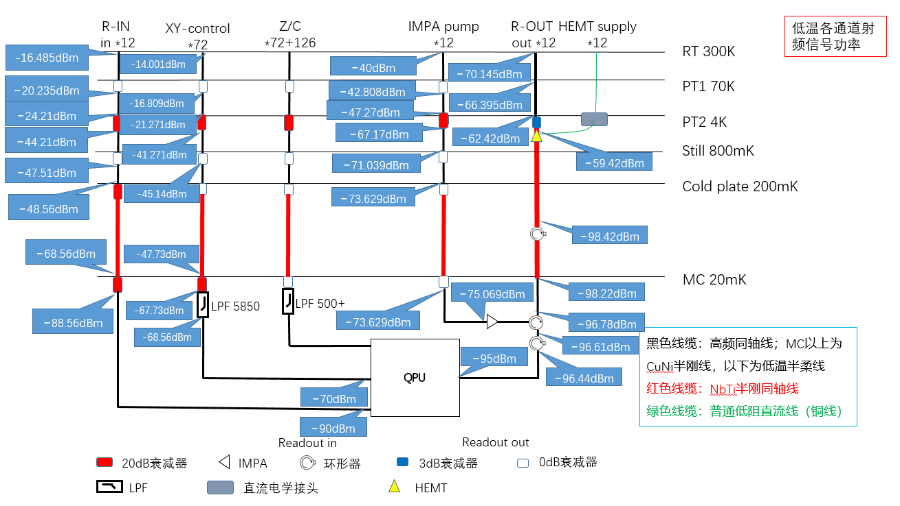

3. 热负荷¶
无论是线缆的损耗，还是衰减器或者滤波器，最终都是将射频能量转化成热能散失，因此对于每层的热载功率，可以通过设置信号初始输入功率逐层计算。
使用的 XY 模块输出功率范围 -40~-10dBm，即最大功率不超过 100uW。

对于 xy ，各层的功耗如下：
LAYER
输入功率dBm
输出功率dBm
单通道发热功率uw
RT-PT1
-14.001
-16.809
18.95184225
PT1-PT2
-16.809
-21.271
13.38694008
PT2-ST
-21.271
-45.14
7.43214939
ST-CP
-45.14
-47.73
0.0137541
CP-MC
-47.73
-47.73
0
MC-QPU
-47.73
-70
0.01676553
计算 READOUT-IN 通道和 XY 类似。
Z-control 通道上是低频信号，对 qubit 的主要影响是 dephasing。假设 Z 线的输入阻抗为 R，到 qubit 的 SQUID 环的互感为 M， Z 的电压噪声谱密度可以转化为磁通噪声谱密度、qubit频率波动
\[
S_\phi(\omega)=(M/R)^2S_{v2}(\omega)
\tag{3.1}
\]
\[
S_{\omega_q}=(\partial{\omega_q}/\partial{\phi})^2S_\phi(\omega)
\tag{3.2}
\]
经过 REF.KONG.P60 的计算，从 Z-control 线路引入的白噪声可以完全忽略。